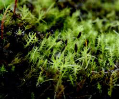

在植物學上，苔蘚植物門是一種苔蘚植物，即為一種非維管植物。苔蘚植物門和近似的地錢門可以由其多細胞假根來加以區分。其他的差別在所有的苔蘚和地錢之間則不具一般性。但是，有清楚分化的「莖」與「葉」、沒有深裂或分節的葉片以及缺少排成三層的二葉子，這些都再再指示此類植物為一個苔蘚。
大多數植物會有雙套的染色體在其細胞內（雙倍體，即每個染色體均存在包含著相同基因訊息的另一個染色體），但苔蘚植物門（和其他的苔蘚植物）只有一套染色體（單倍體，即每一個染色體在細胞內都是唯一的一份）。苔蘚植物門的生命週期中會有一段時期擁有完整、成雙的染色體，但只存在於孢子體階段。
兩種不同種類的苔蘚（和一種地衣，在最小的方格中）環繞著樹幹。傳統上將角苔門和地錢門也一起放在「苔蘚植物門」之下，而將苔蘚放在蘚綱之下。但此種類群現在已知是併系群了，所以現在的系統多將苔蘚植物門用來專指苔蘚。它們是維管植物最接近的現存親戚。
描述 |
||
|
兩種不同種類的苔蘚（和一種地衣，在最小的方格中）環繞著樹幹。傳統上將角苔門和地錢門也一起放在「苔蘚植物門」之下，而將苔蘚放在蘚綱之下。但此種類群現在已知是併系群了，所以現在的系統多將苔蘚植物門用來專指苔蘚。它們是維管植物最接近的現存親戚。 | |
|
||
大多數植物會有雙套的染色體在其細胞內（雙倍體，即每個染色體均存在包含著相同基因訊息的另一個染色體），但苔蘚植物門（和其他的苔蘚植物）只有一套染色體（單倍體，即每一個染色體在細胞內都是唯一的一份）。苔蘚植物門的生命週期中會有一段時期擁有完整、成雙的染色體，但只存在於孢子體階段。